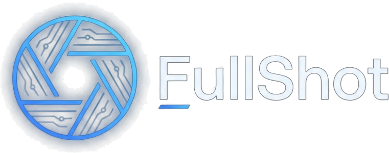

Yükleniyor...
0 × 0 px
100%
1:1
Akıllı Sansür
Damga
Mockup
Kopyala
Dışa Aktar
PNG İndir (HD)
Kayıpsız, net orijinal kalite
PNG
Ctrl+S
JPG İndir
Küçük dosya boyutu, hızlı paylaşım
JPG
WebP İndir
Modern sıkıştırma, ultra hafif
WEBP
📄 Tek Sayfa PDF
Orijinal en/boy oranında tek parça
PDF
Ctrl+P
📑 Çok Sayfalı A4 PDF
Yazdırılabilir A4 sayfalarına bölünmüş
A4 PDF
Tamamla
İptal
Klavye Kısayolları Kılavuzu
✕
Çizim & Düzenleme Araçları
Seçim / Gezinme Aracı
V
El / Tuvali Kaydır
Space
+
Sürükle
Serbest Kalem Çizimi
P
Düz Çizgi
L
Fosforlu Vurgulayıcı
H
Ok Çizimi
A
Dikdörtgen Kutu
R
Daire / Elips
C
Numaralı Adım Rozeti
S
Spotlight / Odak Vurgusu
F
Büyüteç Merceği
Z
Akıllı Nesne Silgisi
E
QA Damga & Emoji
K
Konuşma Balonu
Q
Sansürleme / Mozaik
B
Metin Ekleme
T
Eylemler, Zoom & Dışa Aktar
Geri Al
Ctrl
+
Z
İleri Al
Ctrl
+
Y
Panoya Kopyala
Ctrl
+
C
PNG Olarak İndir
Ctrl
+
S
PDF Olarak İndir
Ctrl
+
P
Yakınlaştır / Uzaklaştır
+
/
-
/
Ctrl+Tekerlek
Ekrana Sığdır
0
Mockup Çerçeve Modu
M
Kısayollar Kılavuzu
?
İptal / Modalı Kapat
ESC
Tarayıcı İçi Genel Yakalama Kısayolları (Herhangi bir web sayfasında aktif):
Alt+Shift+F
Tam Sayfa
Alt+Shift+V
Görünür Alan
Alt+Shift+E
Öğe / Bölüm
Alt+Shift+S
Seçili Alan
3D Mockup & Cihaz Çerçevesi Stüdyosu
✕
Auto
Cihaz Çerçevesi:
macOS Window
macOS
iPhone 16
Safari
Glass
Düz
3D Eğim & Projeksiyon Açısı:
X: 0° | Y: 0°
●
Yatay (Yaw Y):
0°
Dikey (Pitch X):
0°
0° Düz
↖ Sol 3D
↗ Sağ 3D
📐 İzometrik
Sosyal Medya En/Boy Oranı:
Auto
16:9
1:1
4:5
4:3
1.91:1
Ultra-HD Degrade Teması:
Frosted Obsidian
Aurora
Sunset
Cyber
Emerald
Obsidian
Pastel
Kenar Payı:
Dar
Orta
Geniş
Maks
3D Temas Gölgesi:
Yok
Hafif
Derin 3D
Film Grain Dokusu
Analog derinlik katar, bantlaşmayı önler
Başlık & URL Çubuğu
🔴🟡🟢 Butonları ve URL alanı
✨ 3D Projeksiyon & Ultra-HD Çıktı
Panoya Kopyala
WebP İndir
Mockup PNG İndir (HD)
Filigran & Metin Damgası Ekle
✕
Hızlı Damga Şablonları:
🌐 Web Sitesi URL
📅 Tarih & Saat
⚡ FullShot Pro
🔒 GİZLİ / DRAFT
Damga / Filigran Metni:
Konum:
Sağ Alt Köşe (Standart)
Sol Alt Köşe
Sağ Üst Köşe
Sol Üst Köşe
Tuval Ortası (Büyük Çapraz)
Stil & Görünüm:
Koyu Kapsül Rozet (Okunaklı)
Hafif Şeffaf Gölge
Neon Slate Vurgu
Çapraz Şeffaf Filigran
İptal
Damgayı Uygula
Başarılı
İşlem tamamlandı.